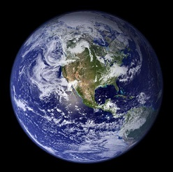
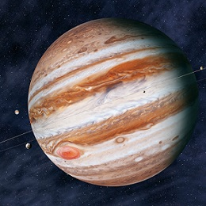
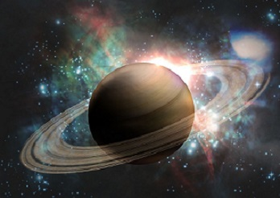
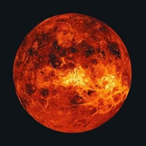

There used to be nine planets in the solar system, Mercury, Venus, Earth, Mars, Jupiter, Saturn, Uranus, Neptune and Pluto. In addition to these larger planets, there are many smaller planets in the solar system, scattered in the asteroid belt between Mars and Jupiter.
In 2006, the 26th International Astronomical Union held in Prague, Czech Republic, decided to demote Pluto to dwarf planet status, so the solar system has become eight planets. So the nine planets have officially entered history and become the eight planets.
|  |  |  |  | |
|---|---|---|---|---|
| Earth | Jupiter | Saturn | Venus | |
| Mass(Kg) | 5.98 x 10^24 | 1.90 x 10^27 | 5.69 x 10^26 | 4.87 x 10^24 |
| Diameter(km) | 12,756 | 142,800 | 120,600 | 12,104 |
| Mean density(kg/m^3) | 5520 | 1314 | 690 | 5250 |
| Escape velocity(m/s) | 11,200 | 59,500 | 35,600 | 10,400 |
| Average distance from Sun | 1 AU (149,597,890km) | 5.203 AU (778,412,020km) | 9.537 AU (1,426,725,400km) | 0.723 AU (108,208,930km) |
| Rotation period(length of day in Earth days) | 1 (23.93 hours) | 0.41 (9.8 Earth hours) | 0.44 (10.2 Earth hours) | 243.02 (retrograde) |
| Revolution period(length of year in Earth years) | 365.26 | 11.86 | 29.46 | 224.7 |